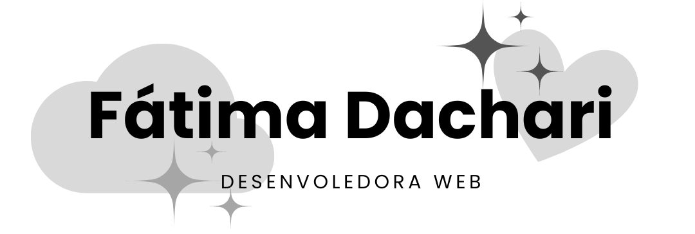

https://fatimadachari.github.io/


Resumo
Com uma base sólida em desenvolvimento front-end, utilizando PHP, Laravel, JavaScript, React e uma paixão crescente pelo back-end, estou atualmente aprofundando meus conhecimentos enquanto curso Engenharia de Software. Meu foco é criar aplicações web ricas e interativas que ofereçam experiências de usuário excepcionais.